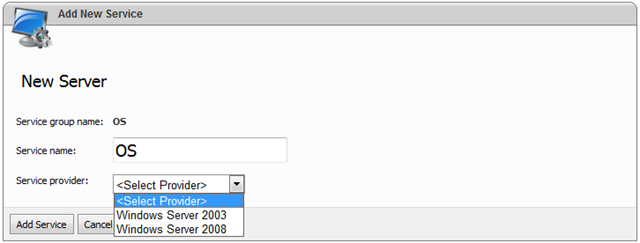

Setting Up Server Services
Translations:
After you have added remote server in WebsitePanel you should configure its services.
What is Service?
Think "Services" as an applications installed on remote server that should be controlled via WSP and available to end-customers. Each service is characterized by provider type (the name/version of the application it can work with) and all services are grouped into resource groups (OS, WEB, FTP, MAIL, etc.).
Registering Server Services
In order to add server services open server details form and then expand "Services" section ("Configuration -> Servers -> Server details):

Before registering server service its corresponding application should be installed and configured on the server.
In order to register a new service click "Add" link in the corresponding resource group.
The following screen will appear:

Specify the display name for the service and select service provider. The values in "Service provider" dropdown depend on the selected resource group. Select the provider that corresponds to the installed application.
Click "Add Service" button to add the server. After that service properties screen will be displayed. Its appearance depends on service provider selected on the previous step. The following sub-sections describe server settings for all service providers:
-
OS
-
Web
-
FTP
-
Mail
-
SQL Server 2000/2005/2008
- MySQL 4/5
-
DNS
-
Statistics